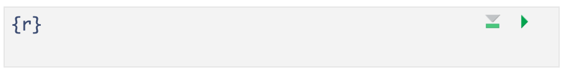

R4: Quarto Continued
2024-10-14
Inline code
- With markdown you can also report R code output inline with the text instead of using a chunk.
Text in editor:

Output:
The mean petal width for all 3 species combined is 1.2 (SD = 0.8) cm.
- Reporting summary statistics this way in a report, makes the numbers computationally reproducible.
- For example, if this were for an abstract and a year later you are wondering where the numbers came from, your R code will tell you exactly which dataset was used to calculate the values.
3 types of Quarto content
- Text, lists, images, tables, links
- Code chunks
- YAML metadata

Formatting text
bold, italics, superscripts & subscripts,
strikethrough,verbatim, etc.
Text is formatted through a markup language called
Markdown(Wikipedia)- Other markup languages include html (webapges) and LaTeX (math)
- All text formatting is specified via code
- “Markdown is a plain text format that is designed to be easy to write, and, even more importantly, easy to read” 1
Newer versions of RStudio include a
Visual editoras well that makes formatting text similar to using a word processor.

Headers
- Organize your documents using headers to create sections and subsections
- Use
#at the beginning of the line to create headers
Text in editor:

Output:

Important
Make sure there is no space before the #, and there IS a space after the # in order for the header to work properly.
RStudio tip
You can easily navigate through your .qmd file if you use headers to outline your text

3 types of Quarto content
- Text, lists, images, tables, links
- Code chunks
- YAML metadata
Code chunks
.qmd file 
html output

Create a code chunk
3 options to create a code chunk
Click on
 at top right of the editor window, or
at top right of the editor window, orKeyboard shortcut
| Mac | Command + Option + I |
| PC | Ctrl + Alt + I |
Visual editor: SelectInsert->Executable Cell->R

What does a code chunk look like?
An empty code chunk looks like this:
Visual editor

Source editor

Important
Note that a code chunks start with ```{r} and ends with ```. Make sure there is no space before ```.
Enter and run code (1/n)
- Type R code inside code chunks
- Select code you want to run, by
- placing the cursor in the line of code you want to run,
- or highlighting the code you want to run
- Run selected code by
- clicking on the
 button in the top right corner of the scripting window and choosing
button in the top right corner of the scripting window and choosing Run Selected Line(s), - or typing one of the following key combinations:
- clicking on the
 button in the top right corner of the scripting window and choosing
button in the top right corner of the scripting window and choosing | Mac | ctrl + return |
| PC | command + return |
- Where does the output appear?

Enter and run code (2/n)
- Run all code in a chunk by
- by clicking the play button in the top right corner of the chunk
- The code output appears below the code chunk

Note
- The output should also appear in the Console.
- Settings can be changed so that the output appears only in the Console and not below the code chunk:
- Select (to right of Render button) and then Chunk Output in Console.
3 types of Quarto content
- Text, lists, images, tables, links
- Code chunks
- YAML metadata
Change the output file type
- The YAML specifies the format of the output file:
- html, Word, pdf, slides, website, book, etc.
- This is done by changing the
format:option


R Packages

R Packages
A good analogy for R packages is that they
are like apps you can download onto a mobile phone:

Installing packages
- Packages contain additional functions and data
Two options to install packages:
install.packages()or- The “Packages” tab in Files/Plots/Packages/Help/Viewer window
- Only install packages once (unless you want to update them)
- Installed from Comprehensive R Archive Network (CRAN) = package mothership

A visual dataset
Compare water sources across the world by country and family income

Check out Gapminder’s Dollar Street for many more examples: https://www.gapminder.org/dollar-street